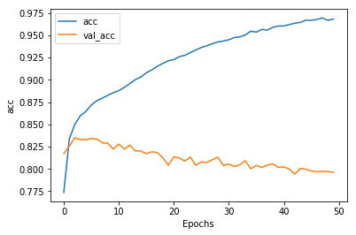
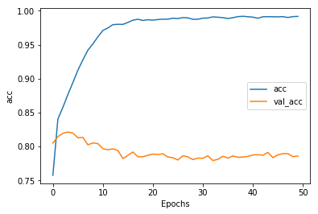
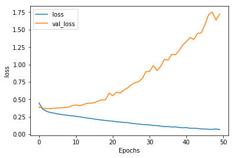
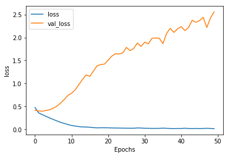
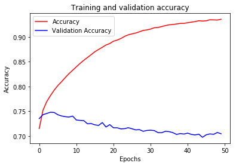
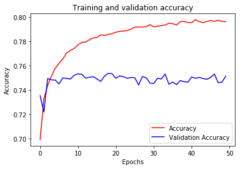
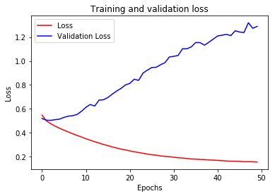
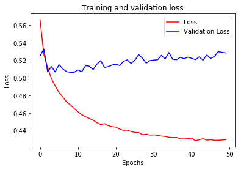

A learning note of the coursera specialization Tensorflow in practice given by deeplearning.ai.
- Course 1: Introduction to TensorFlow for AI, ML and DL
- Course 2: Convolutional Neural Networks in TensorFlow
- Course 3: Natural Language Processing in TensorFlow
- Course 4: Sequences, Time Series and Prediction
C1W1: A New Programming Paradigm
Note
New programming paradigm
| input | output | |
|---|---|---|
| Triditional Programming | Rules, Data | Answers |
| Machine Learning | Answers, Data | Rules |
Code
How to fit a line
import tensorflow as tf
import numpy as np
from tensorflow import keras
model = tf.keras.Sequential([keras.layers.Dense(units=1, input_shape=[1])])
model.compile(optimizer='sgd', loss='mean_squared_error')
xs = np.array([-1.0, 0.0, 1.0, 2.0, 3.0, 4.0], dtype=float)
ys = np.array([-3.0, -1.0, 1.0, 3.0, 5.0, 7.0], dtype=float)
model.fit(xs, ys, epochs=500)
print(model.predict([10.0]))
The predicted value is not 19.0 but a little under. It is because neural networks deal with probabilities, so given the data that we fed the NN with, it calculated that there is a very high probability that the relationship between and is , but with only 6 data points we can’t know for sure. As a result, the result for 10 is very close to 19, but not necessarily 19.
C1W2: Introduction to Computer Vision
Note
Why are the labels numbers instead of words
Using a number is a first step in avoiding bias – instead of labelling it with words in a specific language and excluding people who don’t speak that language! You can learn more about bias and techniques to avoid it here.
What is cross entropy (CE)
where
- : the number of classes
- : the feature vector of the example
- : the label of the example
- : the learned prediction function which takes the feacture vector and returns the probability of being class
When
Difference between categorical_crossentropy and sparse_categorical_crossentropy
- If your targets are one-hot encoded, use categorical_crossentropy.
Examples of one-hot encodings:
[1,0,0]
[0,1,0]
[0,0,1]
- But if your targets are integers, use sparse_categorical_crossentropy.
Examples of integer encodings (for the sake of completion):
1
2
3
Code
# Early stopping
class myCallback(tf.keras.callbacks.Callback):
def on_epoch_end(self, epoch, logs={}):
if(logs.get('loss')<0.4):
print("\nReached 60% accuracy so cancelling training!")
self.model.stop_training = True
callbacks = myCallback()
mnist = tf.keras.datasets.fashion_mnist
(training_images, training_labels), (test_images, test_labels) = mnist.load_data()
# Data normalization
training_images = training_images / 255.0
test_images = test_images / 255.0
model = tf.keras.models.Sequential([tf.keras.layers.Flatten(),
tf.keras.layers.Dense(128, activation=tf.nn.relu),
tf.keras.layers.Dense(10, activation=tf.nn.softmax)])
model.compile(optimizer = 'adam',
loss = 'sparse_categorical_crossentropy',
metrics=['accuracy'])
model.fit(training_images, training_labels, epochs=5, callbacks=[callbacks])
model.evaluate(test_images, test_labels)
C1W3: Enhancing Vision with Convolutional Neural Networks
Note
Convolution Layer
Each kernal is an edge detector which is perfect for computer vision, because often it’s features that can get highlighted like this that distinguish one item for another, and the amount of information needed is then much less…because you’ll just train on the highlighted features.
MaxPooling Layer
The convolution layer is followed by a MaxPooling layer which is then designed to compress the image, while maintaining the content of the features that were highlighted by the convolution
Why CNN works
CNN tries different filters on the image and learning which ones work when looking at the training data. As a result, when it works, you’ll have greatly reduced information passing through the network, but because it isolates and identifies features, you can also get increased accuracy
Code
Model
# Reshape to a 4D tensor, otherwise the Convolutions do not recognize the shape
training_images=training_images.reshape(60000, 28, 28, 1)
training_images=training_images / 255.0
test_images = test_images.reshape(10000, 28, 28, 1)
test_images=test_images/255.0
# 2-convolution-layer NN
model = tf.keras.models.Sequential([
# default: strides = 1, padding = 'valid'
tf.keras.layers.Conv2D(64, (3,3), activation='relu', input_shape=(28, 28, 1)),
# default: strides = None (same as pool_size), padding = 'valid'
tf.keras.layers.MaxPooling2D(2, 2),
tf.keras.layers.Conv2D(64, (3,3), activation='relu'),
tf.keras.layers.MaxPooling2D(2,2),
tf.keras.layers.Flatten(),
tf.keras.layers.Dense(128, activation='relu'),
tf.keras.layers.Dense(10, activation='softmax')
])
_________________________________________________________________ ||
Layer (type) Output Shape Param # || Comments
================================================================= ||
conv2d (Conv2D) (None, 26, 26, 64) 640 || = 64 x (3 x 3 x 1 + 1)
_________________________________________________________________ ||
max_pooling2d (MaxPooling2D) (None, 13, 13, 64) 0 ||
_________________________________________________________________ ||
conv2d_1 (Conv2D) (None, 11, 11, 64) 36928 || = 64 x (3 x 3 x 64 + 1)
_________________________________________________________________ ||
max_pooling2d_1 (MaxPooling2 (None, 5, 5, 64) 0 ||
_________________________________________________________________ ||
flatten_1 (Flatten) (None, 1600) 0 ||
_________________________________________________________________ ||
dense_2 (Dense) (None, 128) 204928 || = 128 x (1600 + 1)
_________________________________________________________________ ||
dense_3 (Dense) (None, 10) 1290 || = 10 * (128 + 1)
================================================================= ||
Total params: 243,786
Trainable params: 243,786
Non-trainable params: 0
How to compute output size
Convolution layer
MaxPooling layer
- : input size
- : padding size
- : filter size
Two kinds of padding:
- Valid: no padding
- Same: results in padding the input such that the output has the same length as the original input
where is almost always odd number
How to compute number of parameters
- : number of filters
- : number of input channels
- Each filter has a bias term
- Convolutions Over Volume
Visualizing the Convolutions and Pooling

Each row represents an itea. There are 3 shoes images here.
The 4 columns represent the output of the first 4 layers (conv2d, max_pooling2d, conv2d_1, max_pooling2d_1).
We can find the commonality for the same kind of items.
C1W4: Using Real-world Images
Note
ImageGenerator
- ImageGenerator can flow images from a directory and perform operations such as resizing them on the fly.
- You can point it at a directory and then the sub-directories of that will automatically generate labels for you
images
|-- training
| |-- horse
| | |-- 1.jpg
| | |-- 2.jpg
| | `-- 3.jpg
| `-- human
| |-- 1.jpg
| |-- 2.jpg
| `-- 3.jpg
`-- validation
|-- horse
| |-- 1.jpg
| |-- 2.jpg
| `-- 3.jpg
`-- human
|-- 1.jpg
|-- 2.jpg
`-- 3.jpg
If you point ImageGenerator to training directory, it will generate a stream of images labelled with horse or human
Mini-batch
Why mini-batch
For large neural networks with very large and highly redundant training sets, it is nearly always best to use mini-batch learning.
- The mini-batches may need to be quite big when adapting fancy methods.
- Big mini-batches are more computationally efficient.
Optimization
- Momentum
- RMSProp
- Adam
Code
Model
import tensorflow as tf
from tensorflow.keras.optimizers import RMSprop
model = tf.keras.models.Sequential([
# Note the input shape is the desired size of the image 300x300 with 3 bytes color
# This is the first convolution
tf.keras.layers.Conv2D(16, (3,3), activation='relu', input_shape=(300, 300, 3)),
tf.keras.layers.MaxPooling2D(2, 2),
# The second convolution
tf.keras.layers.Conv2D(32, (3,3), activation='relu'),
tf.keras.layers.MaxPooling2D(2,2),
# The third convolution
tf.keras.layers.Conv2D(64, (3,3), activation='relu'),
tf.keras.layers.MaxPooling2D(2,2),
# The fourth convolution
tf.keras.layers.Conv2D(64, (3,3), activation='relu'),
tf.keras.layers.MaxPooling2D(2,2),
# The fifth convolution
tf.keras.layers.Conv2D(64, (3,3), activation='relu'),
tf.keras.layers.MaxPooling2D(2,2),
# Flatten the results to feed into a DNN
tf.keras.layers.Flatten(),
# 512 neuron hidden layer
tf.keras.layers.Dense(512, activation='relu'),
# Only 1 output neuron. It will contain a value from 0-1 where 0 for 1 class ('horses') and 1 for the other ('humans')
tf.keras.layers.Dense(1, activation='sigmoid')
])
# Train our model with the binary_crossentropy loss,
# because it's a binary classification problem and our final activation is a sigmoid.
# [More details](http://www.cs.toronto.edu/~tijmen/csc321/slides/lecture_slides_lec6.pdf)
model.compile(loss='binary_crossentropy',
optimizer=RMSprop(lr=0.001),
metrics=['acc'])
model.summary()
Layer (type) Output Shape Param #
=================================================================
conv2d (Conv2D) (None, 298, 298, 16) 448
_________________________________________________________________
max_pooling2d (MaxPooling2D) (None, 149, 149, 16) 0
_________________________________________________________________
conv2d_1 (Conv2D) (None, 147, 147, 32) 4640
_________________________________________________________________
max_pooling2d_1 (MaxPooling2 (None, 73, 73, 32) 0
_________________________________________________________________
conv2d_2 (Conv2D) (None, 71, 71, 64) 18496
_________________________________________________________________
max_pooling2d_2 (MaxPooling2 (None, 35, 35, 64) 0
_________________________________________________________________
conv2d_3 (Conv2D) (None, 33, 33, 64) 36928
_________________________________________________________________
max_pooling2d_3 (MaxPooling2 (None, 16, 16, 64) 0
_________________________________________________________________
conv2d_4 (Conv2D) (None, 14, 14, 64) 36928
_________________________________________________________________
max_pooling2d_4 (MaxPooling2 (None, 7, 7, 64) 0
_________________________________________________________________
flatten (Flatten) (None, 3136) 0
_________________________________________________________________
dense (Dense) (None, 512) 1606144
_________________________________________________________________
dense_1 (Dense) (None, 1) 513
=================================================================
Total params: 1,704,097
Trainable params: 1,704,097
Non-trainable params: 0
The convolutions reduce the shape from 90000 (300 x 300) down to 3136
ImageDataGenerator
# All images will be rescaled by 1./255
train_datagen = ImageDataGenerator(rescale=1/255)
validation_datagen = ImageDataGenerator(rescale=1/255)
# Flow training images in batches of 128 using train_datagen generator
train_generator = train_datagen.flow_from_directory(
'/tmp/horse-or-human/', # This is the source directory for training images
target_size=(300, 300), # All images will be resized to 150x150
batch_size=128, # number of images for each batch
# Since we use binary_crossentropy loss, we need binary labels
class_mode='binary')
# Flow training images in batches of 128 using train_datagen generator
validation_generator = validation_datagen.flow_from_directory(
'/tmp/validation-horse-or-human/', # This is the source directory for validation images
target_size=(300, 300), # All images will be resized to 150x150
batch_size=32, # number of images for each batch
# Since we use binary_crossentropy loss, we need binary labels
class_mode='binary')
history = model.fit_generator(
train_generator,
steps_per_epoch=8, # number of batches for each epoch durning training
epochs=15,
verbose=1,
validation_data = validation_generator,
validation_steps=8) # number of batches for each epoch durning validation
Visualizing Intermediate Representations

As you can see we go from the raw pixels of the images to increasingly abstract and compact representations. The representations downstream start highlighting what the network pays attention to, and they show fewer and fewer features being “activated”; most are set to zero. This is called “sparsity.” Representation sparsity is a key feature of deep learning.
These representations carry increasingly less information about the original pixels of the image, but increasingly refined information about the class of the image. You can think of a convnet (or a deep network in general) as an information distillation pipeline.
C2W1: Exploring a Larger Dataset
Note
- Data: https://www.kaggle.com/c/dogs-vs-cats
model.layersAPI allows you to inspect the impact of convolutions on the images.
Code
import numpy as np
import random
from tensorflow.keras.preprocessing.image import img_to_array, load_img
# Let's define a new Model that will take an image as input, and will output
# intermediate representations for all layers in the previous model after
# the first.
successive_outputs = [layer.output for layer in model.layers[1:]]
#visualization_model = Model(img_input, successive_outputs)
visualization_model = tf.keras.models.Model(inputs = model.input, outputs = successive_outputs)
# Let's prepare a random input image of a cat or dog from the training set.
cat_img_files = [os.path.join(train_cats_dir, f) for f in train_cat_fnames]
dog_img_files = [os.path.join(train_dogs_dir, f) for f in train_dog_fnames]
img_path = random.choice(cat_img_files + dog_img_files)
img = load_img(img_path, target_size=(150, 150)) # this is a PIL image
x = img_to_array(img) # Numpy array with shape (150, 150, 3)
x = x.reshape((1,) + x.shape) # Numpy array with shape (1, 150, 150, 3)
# Rescale by 1/255
x /= 255.0
# Let's run our image through our network, thus obtaining all
# intermediate representations for this image.
successive_feature_maps = visualization_model.predict(x)
# These are the names of the layers, so can have them as part of our plot
layer_names = [layer.name for layer in model.layers]
# -----------------------------------------------------------------------
# Now let's display our representations
# -----------------------------------------------------------------------
for layer_name, feature_map in zip(layer_names, successive_feature_maps):
if len(feature_map.shape) == 4:
#-------------------------------------------
# Just do this for the conv / maxpool layers, not the fully-connected layers
#-------------------------------------------
n_features = feature_map.shape[-1] # number of features in the feature map
size = feature_map.shape[ 1] # feature map shape (1, size, size, n_features)
# We will tile our images in this matrix
display_grid = np.zeros((size, size * n_features))
#-------------------------------------------------
# Postprocess the feature to be visually palatable
#-------------------------------------------------
for i in range(n_features):
x = feature_map[0, :, :, i]
x -= x.mean()
x /= x.std ()
x *= 64
x += 128
x = np.clip(x, 0, 255).astype('uint8')
display_grid[:, i * size : (i + 1) * size] = x # Tile each filter into a horizontal grid
#-----------------
# Display the grid
#-----------------
scale = 20. / n_features
plt.figure( figsize=(scale * n_features, scale) )
plt.title ( layer_name )
plt.grid ( False )
plt.imshow( display_grid, aspect='auto', cmap='viridis' )
C2W2: Augmentation: A technique to avoid overfitting
Note
Image augmentation
-
Image augmentation implementation in Keras: https://keras.io/preprocessing/image/
-
Image generator library lets you load the images into memory, process the images and then steam that to the training set to the neural network we will ultimatedly learn on.The preprocessing doesn’t require you to edit your raw images, nor does it amend them for you on-disk. It does it in-memory as it’s performing the training, allowing you to experiment without impacting your dataset.
-
As we start training, we’ll initially see that the accuracy is lower than with the non-augmented version. This is because of the random effects of the different image processing that’s being done. As it runs for a few more epochs, you’ll see the accuracy slowly climbing.
-
The image augmentation introduces a random element to the training images but if the validation set doesn’t have the same randomness, then its results can fluctuate. You don’t just need a broad set of images for training, you also need them for testing or the image augmentation won’t help you very much.(which does NOT mean that you should augment your validation set, see below)
-
Validation dataset should not be augmented: the validation set is used to estimate how your method works on real world data, thus it should only contain real world data. Adding augmented data will not improve the accuracy of the validation. It will at best say something about how well your method responds to the data augmentation, and at worst ruin the validation results and interpretability. As the validation accuracy is no longer a good proxy for the accuracy on new unseen data if you augment the validation data
Code
train_datagen = ImageDataGenerator(
rescale=1./255,
rotation_range=40,
width_shift_range=0.2,
height_shift_range=0.2,
shear_range=0.2,
zoom_range=0.2,
horizontal_flip=True,
fill_mode='nearest')
C2W3: Transfer Learning
Note
What is transfer learning
You can take an existing model, freeze many of its layers to prevent them being retrained, and effectively ‘remember’ the convolutions it was trained on to fit images, then added your own DNN underneath this so that you could retrain on your images using the convolutions from the other model.
Why dropout can do the regularization
The idea behind Dropouts is that they remove a random number of neurons in your neural network. This works very well for two reasons:
-
The first is that neighboring neurons often end up with similar weights, which can lead to overfitting, so dropping some out at random can remove this.
-
The second is that often a neuron can over-weigh the input from a neuron in the previous layer, and can over specialize as a result. It can not rely on any of the input which will be randomly dropped, instead, it will spread the weights, by which the weights will be shrinked.
Code
from tensorflow.keras import layers
from tensorflow.keras import Model
from tensorflow.keras.optimizers import RMSprop
from tensorflow.keras.applications.inception_v3 import InceptionV3
local_weights_file = '/tmp/inception_v3_weights_tf_dim_ordering_tf_kernels_notop.h5'
pre_trained_model = InceptionV3(input_shape = (150, 150, 3),
include_top = False, # whether to include the fully-connected layer at the top of the network.
weights = None) # one of None (random initialization) or 'imagenet' (pre-training on ImageNet).
for layer in pre_trained_model.layers:
layer.trainable = False
last_layer = pre_trained_model.get_layer('mixed7')
last_output = last_layer.output
# Flatten the output layer to 1 dimension
x = layers.Flatten()(last_output)
# Add a fully connected layer with 1,024 hidden units and ReLU activation
x = layers.Dense(1024, activation='relu')(x)
# Add a dropout rate of 0.2
x = layers.Dropout(0.2)(x)
# Add a final sigmoid layer for classification
x = layers.Dense (1, activation='sigmoid')(x)
model = Model( pre_trained_model.input, x)
model.compile(optimizer = RMSprop(lr=0.0001),
loss = 'binary_crossentropy',
metrics = ['acc'])
C2W4: Multiclass Classification
Note
- Use CGI to generate images for Rock, Paper, Scissors
Code
train_generator = training_datagen.flow_from_directory(
TRAINING_DIR,
target_size=(150,150),
class_mode='categorical'
)
# Same for validation
model = tf.keras.models.Sequential([
# Convolution layers
# ...
# Flatten the results to feed into a DNN
tf.keras.layers.Flatten(),
tf.keras.layers.Dropout(0.5),
# 512 neuron hidden layer
tf.keras.layers.Dense(512, activation='relu'),
# 3 nodes with softmax
tf.keras.layers.Dense(3, activation='softmax')
])
Another way of using fit_generator API via (images, labels), instead of via directory
history = model.fit_generator(train_datagen.flow(training_images, training_labels, batch_size=32),
steps_per_epoch=len(training_images) / 32,
epochs=15,
validation_data=validation_datagen.flow(testing_images, testing_labels, batch_size=32),
validation_steps=len(testing_images) / 32)
C3W1: Sentiment in text
Code
from tensorflow.keras.preprocessing.text import Tokenizer
sentences = [
'I love my dog',
'I love my cat'
]
tokenizer = Tokenizer(num_words = 100, oov_token='<OOV>')
tokenizer.fit_on_texts(sentences)
word_index = tokenizer.word_index
print(word_index)
Remark:
- If the number of distinct words is bigger than
num_words, the tokenizer will do is take the top 100 words by volume num_wordsis optional. If it is not set, it will take all the words in thesentencesoov_tokenis used for words that aren’t in the word index- Punctuation like spaces and the comma, have actually been removed
- Token is case sensitive => convert to lower case
word_indexis sorted by commonality
sequences = tokenizer.texts_to_sequences(sentences)
Remark:
If you train a neural network on a corpus of texts, and the text has a word index generated from it, then when you want to do inference with the train model, you’ll have to encode the text that you want to infer on with the same word index, otherwise it would be meaningless.
test_seq = tokenizer.texts_to_sequences(test_data)
Remark:
New words which are not in the index will be lost in the sequences
In the case:
- We need a very board corpus
- We need to put a special value for unknown word
Tokenizer(num_words = 100, oov_token="<OOV>")
from tensorflow.keras.preprocessing.sequence import pad_sequences
padded = pad_sequences(sequences)
Remark:
Pad leading zeros to fill the size of the longest sequence
padded = pad_sequences(sequences, padding='post', truncating='post', maxlen=5)
Remark:
- If you only want your sentences to have a maximum of five words. You can say
maxlen=5 - Sentences longer than the
maxlenlose information from the beginning by default - If you want to lose from the end instead, you can do so with the
truncatingparameter
C3W2: Word Embeddings
Note
Why subwords works poorly
Not only do the meanings of the words matter, but also the sequence in which they are found.
Subwords are meaningless and our neural network does not take the order of the words into account.
This is where RNN comes to play.
Code
Check TF version
import tensorflow as tf
print(tf.__version__)
Remark:
- Use python3
- If the version of tensorflow is 1.x, you should do
tf.enable_eager_execution()which is default in tensorflow 2.x
Download imdb_reviews via tensorflow-datasets
!pip install -q tensorflow-datasets
import tensorflow_datasets as tfds
imdb, info = tfds.load("imdb_reviews", with_info=True, as_supervised=True)
train_data, test_data = imdb['train'], imdb['test']
Remark:
- More information about this API: https://www.tensorflow.org/datasets/api_docs/python/tfds/load
Prepare dataset
from tensorflow.keras.preprocessing.text import Tokenizer
from tensorflow.keras.preprocessing.sequence import pad_sequences
vocab_size = 10000
embedding_dim = 16
max_length = 120
trunc_type = 'post'
padding_type = 'post'
oov_tok = '<OOV>'
# train_sentences is a list of string
tokenizer = Tokenizer(num_words=vocab_size, oov_token=oov_tok)
tokenizer.fit_on_texts(train_sentences)
word_index = tokenizer.word_index
train_sequences = tokenizer.texts_to_sequences(train_sentences)
train_padded = pad_sequences(train_sequences,
padding=padding_type,
truncating=trunc_type,
maxlen=max_length)
# validation_sentences is a list of string
validation_sequences = tokenizer.texts_to_sequences(validation_sentences)
validation_padded = pad_sequences(validation_sequences,
padding=padding_type,
truncating=trunc_type,
maxlen=max_length)
# label is a list of string
label_tokenizer = Tokenizer()
label_tokenizer.fit_on_texts(labels)
training_label_seq = np.array(label_tokenizer.texts_to_sequences(train_labels))
validation_label_seq = np.array(label_tokenizer.texts_to_sequences(validation_labels))
Remark:
- the number of unique label is always very small, no need to set
num_wordsandoov_token - Once labels are parsed into a list, we need to convert the list into numpy array which is required by
tf.kerasAPIs used below
Train word embedding label
model = tf.keras.Sequential([
tf.keras.layers.Embedding(vocab_size, embedding_dim, input_length=max_length),
# tf.keras.layers.Flatten(),
tf.keras.layers.GlobalAveragePooling1D(),
tf.keras.layers.Dense(24, activation='relu'),
tf.keras.layers.Dense(6, activation='softmax'),
])
model.compile(loss='sparse_categorical_crossentropy', optimizer='adam', metrics=['accuracy'])
num_epochs = 30
history = model.fit(train_padded, training_label_seq,
epochs=num_epochs,
validation_data=(validation_padded, validation_label_seq),
verbose=2)
Remark:
Flatten()more parameters => more accurateGlobalAveragePooling1Dless parameters => less accurate but still goodGlobalAveragePooling1Daverages across the vector to flatten it out- Check out the model summary below
Layer (type) Output Shape Param #
=================================================================
embedding (Embedding) (None, 120, 16) 160000
_________________________________________________________________
flatten (Flatten) (None, 1920) 0
_________________________________________________________________
dense (Dense) (None, 6) 11526
_________________________________________________________________
dense_1 (Dense) (None, 1) 7
=================================================================
Total params: 171,533
Trainable params: 171,533
Non-trainable params: 0
_________________________________________________________________
Layer (type) Output Shape Param #
=================================================================
embedding_1 (Embedding) (None, 120, 16) 160000
_________________________________________________________________
global_average_pooling1d (Gl (None, 16) 0
_________________________________________________________________
dense_2 (Dense) (None, 6) 102
_________________________________________________________________
dense_3 (Dense) (None, 1) 7
=================================================================
Total params: 160,109
Trainable params: 160,109
Non-trainable params: 0
As shown in the figure above, here is how this network works:
- Each word in one input sequence is transformed into a one-hot coding encoding vector, which is why Embedding layer take
vocab_sizeas a parameter. - Each one-hot vector passes through the same embedding layer, it will be transformed into 16-dim vector. For a sequence, we have 120 such vectors.
- Instead of flatten these 120 vectors, we take average of them. So the output is still a 16-dim vector.
- The following 2 dense layer is straightforward.
Remark:
Global Average Pooling (GAP) is generally better flatten layer in the structure above, because it only needs less weight which leads to some extent of regularization and can accelarate the training as well.
Word embedding visualization
reverse_word_index = dict([(value, key) for (key, value) in word_index.items()])
def decode_sentence(text):
return ' '.join([reverse_word_index.get(i, '?') for i in text])
e = model.layers[0]
weights = e.get_weights()[0]
print(weights.shape) # shape: (vocab_size, embedding_dim)
import io
out_v = io.open('vecs.tsv', 'w', encoding='utf-8')
out_m = io.open('meta.tsv', 'w', encoding='utf-8')
for word_num in range(1, vocab_size):
word = reverse_word_index[word_num]
embeddings = weights[word_num]
out_m.write(word + "\n")
out_v.write('\t'.join([str(x) for x in embeddings]) + "\n")
out_v.close()
out_m.close()
Remark:
- Upload these two files to https://projector.tensorflow.org
- You can check if the close words have similiar semantics via UI
C3W3: Sequence models
Note
- In terms of loss and accuracy curves, 2-layer LSTM is more smooth.
- LSTM is more likely to overfit than flatten and averaged layer.
- In this week, we tried B-LSTM, B-GRU and Conv1D models. All of them have over-fitting issue, it is natually because there are words which are out of vocabulary. They can not learning during training and leads to the over-fitting.
Model comparison
IMDB Subwords 8K
Training takes too long to run in colab, so no plots.
model = tf.keras.Sequential([
tf.keras.layers.Embedding(tokenizer.vocab_size, 64),
tf.keras.layers.Bidirectional(tf.keras.layers.LSTM(64)),
tf.keras.layers.Dense(64, activation='relu'),
tf.keras.layers.Dense(1, activation='sigmoid')
])
Model: "sequential"
_________________________________________________________________
Layer (type) Output Shape Param #
=================================================================
embedding (Embedding) (None, None, 64) 523840
_________________________________________________________________
bidirectional (Bidirectional (None, 128) 66048
_________________________________________________________________
dense (Dense) (None, 64) 8256
_________________________________________________________________
dense_1 (Dense) (None, 1) 65
=================================================================
Total params: 598,209
Trainable params: 598,209
Non-trainable params: 0
_________________________________________________________________
model = tf.keras.Sequential([
tf.keras.layers.Embedding(tokenizer.vocab_size, 64),
tf.keras.layers.Bidirectional(tf.keras.layers.LSTM(64, return_sequences=True)),
tf.keras.layers.Bidirectional(tf.keras.layers.LSTM(32)),
tf.keras.layers.Dense(64, activation='relu'),
tf.keras.layers.Dense(1, activation='sigmoid')
])
Model: "sequential"
_________________________________________________________________
Layer (type) Output Shape Param #
=================================================================
embedding (Embedding) (None, None, 64) 523840
_________________________________________________________________
bidirectional (Bidirectional (None, None, 128) 66048
_________________________________________________________________
bidirectional_1 (Bidirection (None, 64) 41216
_________________________________________________________________
dense (Dense) (None, 64) 4160
_________________________________________________________________
dense_1 (Dense) (None, 1) 65
=================================================================
Total params: 635,329
Trainable params: 635,329
Non-trainable params: 0
_________________________________________________________________
model = tf.keras.Sequential([
tf.keras.layers.Embedding(tokenizer.vocab_size, 64),
tf.keras.layers.Conv1D(128, 5, activation='relu'),
tf.keras.layers.GlobalAveragePooling1D(),
tf.keras.layers.Dense(64, activation='relu'),
tf.keras.layers.Dense(1, activation='sigmoid')
])
Model: "sequential"
_________________________________________________________________
Layer (type) Output Shape Param #
=================================================================
embedding (Embedding) (None, None, 64) 523840
_________________________________________________________________
conv1d (Conv1D) (None, None, 128) 41088
_________________________________________________________________
global_average_pooling1d (Gl (None, 128) 0
_________________________________________________________________
dense (Dense) (None, 64) 8256
_________________________________________________________________
dense_1 (Dense) (None, 1) 65
=================================================================
Total params: 573,249
Trainable params: 573,249
Non-trainable params: 0
_________________________________________________________________
Sarcasm
model = tf.keras.Sequential([
tf.keras.layers.Embedding(vocab_size, embedding_dim, input_length=max_length),
tf.keras.layers.Bidirectional(tf.keras.layers.LSTM(32)),
tf.keras.layers.Dense(24, activation='relu'),
tf.keras.layers.Dense(1, activation='sigmoid')
])
Model: "sequential"
_________________________________________________________________
Layer (type) Output Shape Param #
=================================================================
embedding (Embedding) (None, 120, 16) 16000
_________________________________________________________________
bidirectional (Bidirectional (None, 64) 12544
_________________________________________________________________
dense (Dense) (None, 24) 1560
_________________________________________________________________
dense_1 (Dense) (None, 1) 25
=================================================================
Total params: 30,129
Trainable params: 30,129
Non-trainable params: 0
_________________________________________________________________
model = tf.keras.Sequential([
tf.keras.layers.Embedding(vocab_size, embedding_dim, input_length=max_length),
tf.keras.layers.Conv1D(128, 5, activation='relu'),
tf.keras.layers.GlobalMaxPooling1D(),
tf.keras.layers.Dense(24, activation='relu'),
tf.keras.layers.Dense(1, activation='sigmoid')
])
Model: "sequential"
_________________________________________________________________
Layer (type) Output Shape Param #
=================================================================
embedding (Embedding) (None, 120, 16) 16000
_________________________________________________________________
conv1d (Conv1D) (None, 116, 128) 10368
_________________________________________________________________
global_max_pooling1d (Global (None, 128) 0
_________________________________________________________________
dense (Dense) (None, 24) 3096
_________________________________________________________________
dense_1 (Dense) (None, 1) 25
=================================================================
Total params: 29,489
Trainable params: 29,489
Non-trainable params: 0
_________________________________________________________________
| Bidirectional LSTM | 1D Convolutional Layer | |
|---|---|---|
| Time per epoch | 85s | 3s |
| Accuracy |  |  |
| Loss |  |  |
Code
model = tf.keras.Sequential([
tf.keras.layers.Embedding(vocab_size+1, embedding_dim, input_length=max_length, weights=[embeddings_matrix], trainable=False),
tf.keras.layers.Dropout(0.2),
tf.keras.layers.Conv1D(64, 5, activation='relu'),
tf.keras.layers.MaxPooling1D(pool_size=4),
tf.keras.layers.LSTM(64),
tf.keras.layers.Dense(1, activation='sigmoid')
])
model.compile(loss='binary_crossentropy',optimizer='adam',metrics=['accuracy'])
model.summary()
num_epochs = 50
history = model.fit(training_sequences,
training_labels,
epochs=num_epochs,
validation_data=(test_sequences, test_labels),
verbose=2)
_________________________________________________________________
Layer (type) Output Shape Param #
=================================================================
embedding (Embedding) (None, 16, 100) 13802600
_________________________________________________________________
dropout (Dropout) (None, 16, 100) 0
_________________________________________________________________
conv1d (Conv1D) (None, 12, 64) 32064
_________________________________________________________________
max_pooling1d (MaxPooling1D) (None, 3, 64) 0
_________________________________________________________________
lstm (LSTM) (None, 64) 33024
_________________________________________________________________
dense (Dense) (None, 1) 65
=================================================================
Total params: 13,867,753
Trainable params: 65,153
Non-trainable params: 13,802,600
_________________________________________________________________
Applying regularization techniques like drop out can overcome overfitting. We can see from the figures below that the validation loss does not increase sharply!
| Without Dropout | With Dropout | |
|---|---|---|
| Accuracy |  |  |
| Loss |  |  |
C3W4: Sequence models and literature
Note
When you have very large bodies of text with many many words, the word based prediction does not work well. Because the number of unique words in the collection is very big, and there are over millions of sequences generated using the algorithm. So the labels alone would require the storage of many terabytes of RAM.
A better approache is character-based prediction. The full number of unique characters in a corpus is far less than the full number of unique words, at least in English. So the same principles that you use to predict words can be used to apply here.
Code
corpus = data.lower().split("\n")
tokenizer.fit_on_texts(corpus)
total_words = len(tokenizer.word_index) + 1 # Add 1 for OOV
# create input sequences using list of tokens
input_sequences = []
for line in corpus:
token_list = tokenizer.texts_to_sequences([line])[0]
for i in range(1, len(token_list)):
n_gram_sequence = token_list[:i+1]
input_sequences.append(n_gram_sequence)
# pad sequences
max_sequence_len = max([len(x) for x in input_sequences])
input_sequences = np.array(pad_sequences(input_sequences,
maxlen=max_sequence_len,
padding='pre'))
# create predictors and label
predictors, label = input_sequences[:,:-1],input_sequences[:,-1]
label = tensorflow.keras.utils.to_categorical(label, num_classes=total_words)
model = Sequential()
# input_length: minus 1 since the last word is the label
model.add(Embedding(total_words, 100, input_length=max_sequence_len-1))
model.add(Bidirectional(LSTM(150, return_sequences = True)))
model.add(Dropout(0.2))
model.add(LSTM(100))
model.add(Dense(total_words/2, activation='relu', kernel_regularizer=regularizers.l2(0.01)))
model.add(Dense(total_words, activation='softmax'))
model.compile(loss='categorical_crossentropy', optimizer='adam', metrics=['accuracy'])
print(model.summary())
history = model.fit(predictors, label, epochs=100, verbose=1)
Model: "sequential_1"
_________________________________________________________________
Layer (type) Output Shape Param #
=================================================================
embedding (Embedding) (None, 10, 100) 321100
_________________________________________________________________
bidirectional (Bidirectional (None, 10, 300) 301200
_________________________________________________________________
dropout (Dropout) (None, 10, 300) 0
_________________________________________________________________
lstm_1 (LSTM) (None, 100) 160400
_________________________________________________________________
dense (Dense) (None, 1605) 162105
_________________________________________________________________
dense_1 (Dense) (None, 3211) 5156866
=================================================================
Total params: 6,101,671
Trainable params: 6,101,671
Non-trainable params: 0
_________________________________________________________________
C4W1: Sequences and Prediction
Note
Imputation: Fill data in the pase or fill the missing data
Trends: upward or downward
Seasonalities: repeated patterns
Autocorrelation: correlated with a delayed copy of itself (lag)
Noise：random / occasional values
Combination of all the above
Non-stationary time series: the behavior changed, it should be trained by using time window
Split training period, validation period, test period
-
Fixed partition:
If test period is the most recent dataset which has a strong signal for the future, it should be used to train the model, otherwise the model may not be optimal. So it is quite common to use just a training period and a validation period for model training, and the test set is in the future -
Roll-forward partition:
At each iteration, we train the model on a training period. And we use it to forecast the following day, or the following week, in the validation period. It can been seen as doing fixed partitioning a number of times, and then continually refining the model as such
Metric
mse = np.square(errors).mean()
mae = np.abs(errors).mean()
mse penalize more large errors than mae does.
if large errors are potentially dangerous and they cost you much more than smaller errors, then you may prefer the mse. But if your gain or your loss is just proportional to the size of the error, then the mae may be better.
Moving average and differencing
- Use differencing to cancel out the seasonality and trends
- Use moving average to forecast the difference time series
- Use moving average to past time series
- Add back the smoothed differece to the smoothed past time series
Trailing windows and centered windows
Moving averages using centered windows can be more accurate than using trailing windows. But we can’t use centered windows to smooth present values since we don’t know future values. However, to smooth past values we can afford to use centered windows.
Code
from tensorflow import keras
def moving_average_forecast(series, window_size):
"""Forecasts the mean of the last few values.
If window_size=1, then this is equivalent to naive forecast"""
forecast = []
for time in range(len(series) - window_size):
forecast.append(series[time:time + window_size].mean())
return np.array(forecast)x
print(keras.metrics.mean_squared_error(x_valid, naive_forecast).numpy())
print(keras.metrics.mean_absolute_error(x_valid, naive_forecast).numpy())
C4W2: Deep Neural Networks for Time Series
Note
Preparing feature and labels
dataset = tf.data.Dataset.range(10)
dataset = dataset.window(5, shift=1, drop_remainder=True)
dataset = dataset.flat_map(lambda window: window.batch(5))
dataset = dataset.map(lambda window: (window[:-1], window[-1:]))
dataset = dataset.shuffle(buffer_size=10)
dataset = dataset.batch(2).prefetch(1)
for x,y in dataset:
print("x = ", x.numpy())
print("y = ", y.numpy())
- On line 3, each
windowis an instance of classtensorflow.python.data.ops.dataset_ops._VariantDatasetcontaining 5 elements. But We need to convert it into a tensor, so we just cut it to batches by 5 elements. This is why we havewindow.batch(5) - On line 5,
shufflefills a buffer withbuffer_sizeelements, then randomly samples elements from this buffer, replacing the selected elements with new elements. For perfect shuffling, a buffer size greater than or equal to the full size of the dataset is required and the downside is that it really takes long time. If you don’t care about perfect shuffling, choosing a small number of buffer will just speed things up. You can evenbuffer_sizeis set to 1, in this case, no shuffle will happen here - On line 6, according to the tensorflow doc:
Thetf.dataAPI provides a software pipelining mechanism through thetf.data.Dataset.prefetchtransformation, which can be used to decouple the time data is produced from the time it is consumed. In particular, the transformation uses a background thread and an internal buffer to prefetch elements from the input dataset ahead of the time they are requested. Thus, to achieve the pipelining effect illustrated above, you can addprefetch(1)as the final transformation to your dataset pipeline (orprefetch(n)if a single training step consumes n elements).
Sequence Bias
Sequence bias is when the order of things can impact the selection of things. For example, if I were to ask you your favorite TV show, and listed “Game of Thrones”, “Killing Eve”, “Travellers” and “Doctor Who” in that order, you’re probably more likely to select ‘Game of Thrones’ as you are familiar with it, and it’s the first thing you see. Even if it is equal to the other TV shows. So, when training data in a dataset, we don’t want the sequence to impact the training in a similar way, so it’s good to shuffle them up.
Find the best learning rate
lr_schedule = tf.keras.callbacks.LearningRateScheduler(
lambda epoch: 1e-8 * 10**(epoch / 20))
optimizer = tf.keras.optimizers.SGD(lr=1e-8, momentum=0.9)
model.compile(loss="mse", optimizer=optimizer)
history = model.fit(dataset, epochs=100, callbacks=[lr_schedule], verbose=0)
# plot the loss per epoch against the learning rate per epoch
lrs = 1e-8 * (10 ** (np.arange(100) / 20))
plt.semilogx(lrs, history.history["loss"])
plt.axis([1e-8, 1e-3, 0, 300])
Here, the best learning rate is around 7e-6, because it is the lowest point of the curve where it’s still relatively stable.
C4W3: Recurrent Neural Networks for Time Series
Note
For numeric series, things such as closer numbers in the series might have a greater impact than those further away from our target value.
In some cases, you might want to input a sequence, but you don’t want to output on and you just want to get a single vector for each instance in the batch. This is typically called a sequence to vector RNN. But in reality, all you do is ignore all of the outputs, except the last one. When using Keras in TensorFlow, this is the default behavior.
If you want the recurrent layer to output a sequence, you have to specify return_sequences=True when creating the layer. You’ll need to do this when you stack one RNN layer on top of another.
(huber loss)[https://en.wikipedia.org/wiki/Huber_loss]
The Huber function is a loss function that’s less sensitive to outliers and as this data can get a little bit noisy, it’s worth giving it a shot.
Code
tf.keras.backend.clear_session()
dataset = windowed_dataset(x_train, window_size, batch_size, shuffle_buffer_size)
model = tf.keras.models.Sequential([
tf.keras.layers.Lambda(lambda x: tf.expand_dims(x, axis=-1)),
tf.keras.layers.Bidirectional(tf.keras.layers.LSTM(32, return_sequences=True)),
tf.keras.layers.Bidirectional(tf.keras.layers.LSTM(32)),
tf.keras.layers.Dense(1),
tf.keras.layers.Lambda(lambda x: x * 100.0)
])
model.compile(loss="mse", optimizer=tf.keras.optimizers.SGD(lr=1e-5, momentum=0.9),metrics=["mae"])
history = model.fit(dataset,epochs=500,verbose=1)
Note:
The last lambda layer is used to scale up the outputs by 100, which helps training. The default activation function in the RNN layers is tanH which is the hyperbolic tangent activation. This outputs values between negative one and one. Since the time series values are in that order usually in the 10s like 40s, 50s, 60s, and 70s, then scaling up the outputs to the same ballpark can help us with learning.
C4W4: Real-world time series data
Note
model = tf.keras.models.Sequential([
tf.keras.layers.Conv1D(filters=32, kernel_size=5,
strides=1, padding="causal",
activation="relu",
input_shape=[None, 1]),
tf.keras.layers.Bidirectional(tf.keras.layers.LSTM(32, return_sequences=True)),
tf.keras.layers.Bidirectional(tf.keras.layers.LSTM(32, return_sequences=True)),
tf.keras.layers.Dense(1),
tf.keras.layers.Lambda(lambda x: x * 200)
])
padding="causal"
This simply pads the layer’s input with zeros in the front so that we can also predict the values of early time steps in the window
A good explanation (here)[https://theblog.github.io/post/convolution-in-autoregressive-neural-networks/]